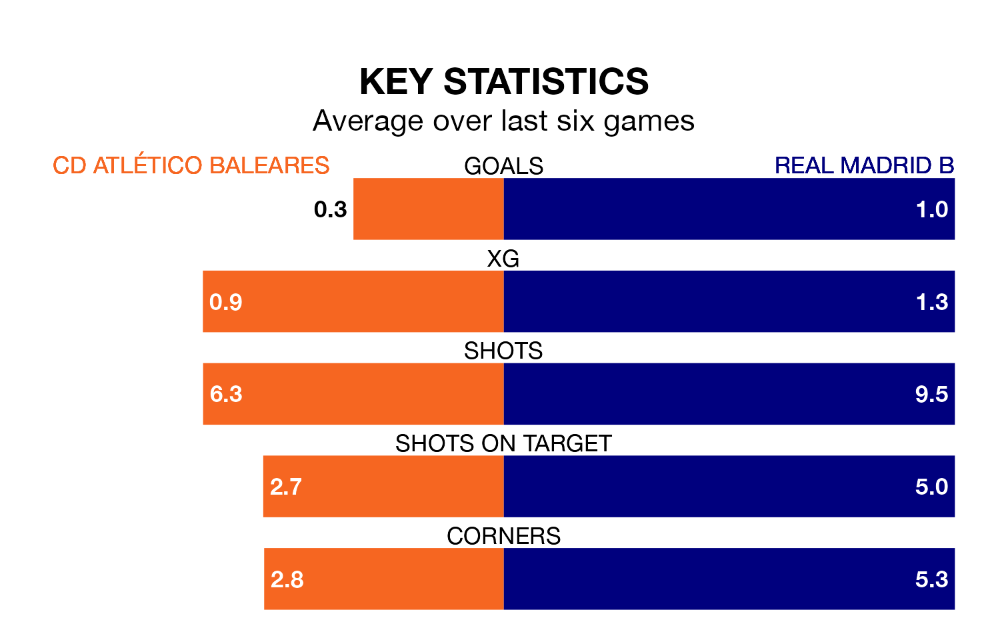

CD Atlético Baleares are on a terrible run ahead of hosting Real Madrid B at Campo de Son Malferit on Sunday, with just one point collected from their last six games.
Atlético Baleares have picked up just one draw in their last six Primera Division RFEF Group 2 games, and face a Madrid B side whose last six games have brought two wins and one draw.
Atlético Baleares are 19th in the table after 29 games, of which they have won five and drawn seven, earning 22 points.
Madrid B are six places ahead of the hosts in 13th, with eight wins and 11 draws putting them on 35 points.
In the last 10 years, Atlético Baleares and Madrid B have played each other on six occasions. They won one each, and they drew four times.
On average, Atlético Baleares scored 1.2 goals and Madrid B 1.8 in those matches.
Their last meeting was on November 5, when Madrid B won 5-0 at home.
With 16 goals in 29 games so far this season, Atlético Baleares are the league's lowest scorers with 0.6 goals per game. And they are conceding more than average, letting in 48 goals at a rate of 1.7 per game.
The away side, meanwhile, are above average scorers, with 1.2 goals per game, compared to a league average of 1.1. They have also conceded 1.2 goals per game.
In Nicolás Paz Martínez, Madrid B have one of the league's sharpest shooters so far this season. He has notched seven goals in 15 appearances, to sit sixth in the scoring charts.
Atlético Baleares's top scorer, with seven goals in 18 games, is David Rodríguez Sánchez.
Atlético Baleares's last match was on Sunday, a 1-1 draw against CD Alcoyano, with Miguel Azeez getting the goal for Atlético Baleares.
Madrid B lost 2-0 against CD Castellón last time out, on March 23.
Updated: 12:16 (UTC), 25/03/24